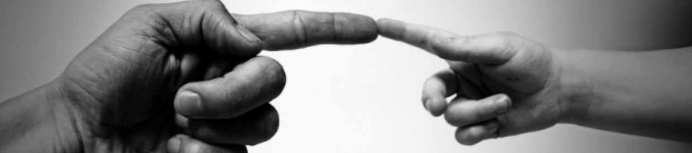
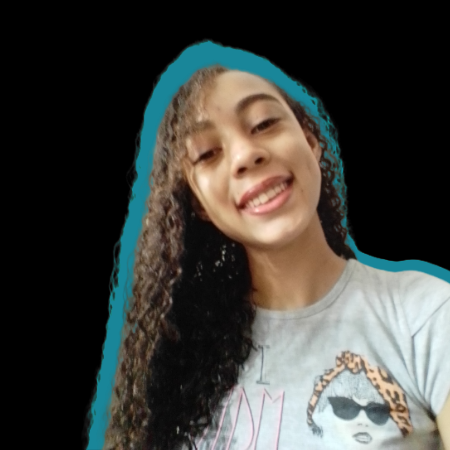

VemComigo.com

Vamos mudar o mundo?
Você já parou pra pensar que pequenas atitudes, pequenos gestos e pequenas iniciativas fazem uma grande diferença no mundo? É isso que eu resolvi fazer, ter uma iniciativa para ajudar pessoas e projetos a ajudarem o mundo.
Desde pequena sempre tive o sonho de mudar o mundo de alguma forma, ainda tenho essa vontade de ser aquele 1% da sociedade que não se conforma com a situação do mundo.
Quando se fala em mudar o mundo para um lugar melhor, na verdade o que mais significa é que, cada ser humano deve mudar seus hábitos e atitudes, para que dessa forma tudo flua de forma harmônica para um bem maior, ou seja, o da comunidade vivente nesse planeta. E esse é o meu propósito!

Me chamo Gabriela Carneiro Batista, tenho 18 anos, sou de Ribeirão Preto nosssa Califórnia brasileira. Sou uma pessoa que ama desvendar coisas novas, conhecer pessoas e culturas diferentes, uma amante do conhecimento, rockeira e apaixonada por empreendedorismo e finanças. Além de, ter um sonho desde pequena de transformar e mudar o mundo.
Recentemente, conclui o ensino médio e fiz alguns cursos dentre eles o de programação que me deu a ideia de criar essa plataforma, já tinha a ideia de ajudar o mundo e contribuir para o planeta terra mas foi na Kick (curso de programação) que me fez colocar em prática.
Precisei fazer um trabalho web e escolher um tema da minha preferência, o projeto era para apresentar para uma banca de jurados valendo prêmios e um desses prêmios era um dominío. Então eu pesquisei vários temas diferentes porque queria algo que ajudasse alguém de alguma forma.
Foi então, quando eu participei de um projeto voluntário que eu e meus colegas criaram. Meus Deus! que coisa difícil. Eu fiquei com a parte da comunicação e divulgação, precisava arrecadar alimentos e produtos de higiene. Mesmo com certificado em marketing digital eu não consegui nenhuma doação pelas redes socias, foi tudo boca a boca.
No meio desse rolo todo foi que percebi que essa plataforma podia sanar a dor de muitos projetos sociais. E porque não, não ser uma rede social para projetos sociais?
.png)
Bom, essa é a nossa história espero de coração que tenha gostado. Foi tudo feito com muito carinho. Bjs e até a próxima.